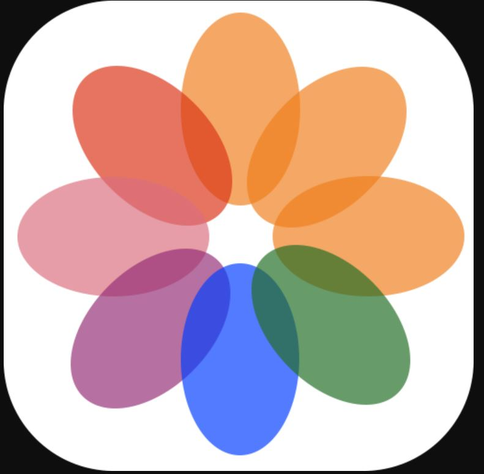

Water--COLOUR
move your mouse to reveal

used to use white a lot until one of my friend told me it's not the best way to get lighter color using white.
lemon juice in the summer
warm tone of yellow reminds me of sunset when I got out of high school.
the color that I used most often, starry night